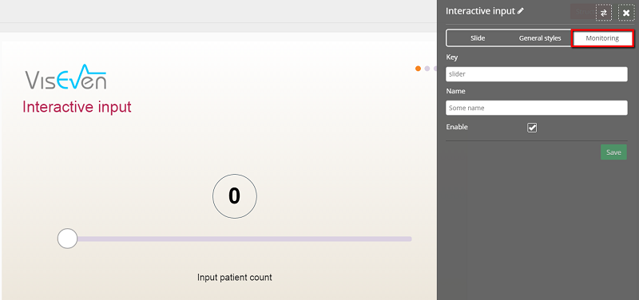

eWizard Online - это инструмент для самостоятельного создания и редактирования HTML-5 презентаций, разработанный компанией QAP INT.
Облегчение труда маркетологов и ускорение внедрения CLM процесса в фармацевтических компаниях – задача нового инструмента eWizard. Использование eWizard позволит Вам стать непосредственными владельцами интерактивных презентаций, самостоятельно создавать и редактировать структуру, наполнение, коммуникационные сообщения, удалять устаревшие слайды или разделы, вносить правки в соответствии c малейшими изменениями в маркетинговых стратегиях компании, утверждать новые или изменённые презентации. Новый инструмент поможет сделать работу менеджера более продуктивной, обеспечит значительную экономию времени и бюджета, возможность создать интерактивную презентацию для любого CLM инструмента всего в несколько простых шагов без навыков программирования.
Данный инструмент позволит Вам более гибко и удобно управлять вашим HTML5 контентом и оперативно вносить в него изменения, основываясь на последних данных и исследованиях вашей маркетинговой активности.
Примечание: в данный момент приложение поддерживается браузерами Chrome и Opera на платформе Windows, а также Safari на платформе Mac OS.
Начало работы
Для того, чтобы начать работу с eWizard, Вам необходимы:
Учетная запись пользователя для входа в инструмент (Логин и пароль)
Файлы HTML-5- презентации в формате *.zip.
Для получения учетных данных пользователя обратитесь к вашему системному администратору или к лицу, ответственному за внедрение eWizard в вашей компании.
Авторизация в приложение
Для работы с редактором презентаций eWizard перейдите по ссылке и введите Ваш логин и пароль:
После авторизации Вы перейдете на главный экран инструмента:
Главный экран состоит из 5-ти основных частей:
1. Навигационная панель. Здесь расположены кнопки перехода на основные разделы инструмента:
Галерея (Gallery);
Создать (Create);
Шаблоны (Templates);
Сценарии (Scenario);
Совместный доступ (Share);
Профиль (Profile)
Администрирование (Admin) – раздел доступен только пользователям с правами администратора;
Инфо (About)
Выход из инструмента (Log out);
2. Поле, в котором отображаются загруженные вами презентации.
3. Поле, в котором отображаются созданные вами шаблонные презентации.
4. Контекстное меню, с помощью которого выполняются основные операции редактирования, просмотра и экспорта презентаций.
5. Панель выбора языка.
Галерея
После авторизации перед Вами откроется раздел «Галерея». В данном разделе находятся все добавленные вами презентации для редактирования. Здесь Вы можете добавлять новые презентации, создавать шаблонные презентации, копировать, удалять и править их, изменять структуру, просматривать готовые слайды, а также экспортировать презентации в необходимом Вам формате:
Меню презентации:
В режиме редактирования презентации слайды группируются по главам (chapters):
Контекстное меню слайда:
Просмотр презентации
Чтобы просмотреть загруженную либо созданную Вами шаблонную презентацию, перейдите в раздел «Галерея» и нажмите на иконку интересующей Вас презентации. Затем, в выпадающем меню под иконкой, нажмите на «Просмотр» (View):
После этого откроется первый слайд презентации:
У Вас также есть возможность изменить режим отображения презентации в соответствии с мобильным устройством, для которого она предназначена. Чтобы сделать это, нажмите на кнопку «Изменить режим просмотра» (Change preview mode) в правом верхнем углу экрана:
Достаточно выбрать один из 3-х доступных режимов: iPad, Samsung Galaxy Tab 2 7", или Samsung Galaxy Tab 2 10".
Находясь в режиме просмотра презентации, Вы также можете перейти к редактированию открытого в данный момент слайда или к редактированию структуры всей презентации. Для этого нажмите на кнопку «Редактировать слайд» (Edit slide) либо на кнопку «Редактировать структуру» (Edit structure) соответственно.
Примечание: процесс редактирования слайдов и структуры презентаций детально рассмотрен в последующих главах.
Просмотр презентации
Данный видеоролик демонстрирует процесс просмотра презентаций, а также выбора режима просмотра в зависимости от устройства.
«Создать» (Create)
Создание шаблонных презентаций
Данный раздел предназначен для создания кастомизированных шаблонных презентаций.
Нажав стрелку «вправо» (далее), Вы перейдете на экран добавления глав в Вашу будущую шаблонную презентацию:
В редакторе шаблоных презентаций доступны следующие главы:
Home screen - начальный слайд презентации
Potential - Потенциал
Problems – Актуализация проблемы
Mechanism – Механизм действия
Argumentation - Аргументация
Doses - Дозирование
Objections - Возражения
Benefits – Преимущества
При выборе глав Вы можете произвольно менять их расположение.
После выбора необходимых глав, при нажатии на стрелку «вправо» (далее) Вы окажетесь на странице, где Вам будет предложено ввести название будущей презентации, указать язык презентации, добавить иконку (лого), а также выбрать одну из доступных тем цветового оформления:
Нажав на кнопку «далее», Вы окажетесь на финальном окне мастера создания шаблона:
Чтобы создать презентацию, снова нажмите на стрелку «вправо».
После этого перед вами откроется окно структуры созданной презентации с разделами глав.
Чтобы добавить слайды к соответствующим главам, нажмите на «+» под названием главы и последовательно добавьте нужные Вам слайды из доступных для выбора:
После этого выбранные слайды появятся в соответствующих разделах окна структуры презентации:
Проделайте аналогичную операцию с остальными главами презентации. Для Вашего удобства, слайды уже сгруппированы по разделам. Вам необходимо выбрать те, которые Вы хотите включить в Вашу презентацию.
Для редактирования, удаления и копирования слайда, кликните по нему мышкой. Появится выпадающее меню:
Примечание: после редактирования слайда, его иконка в окне структуры презентации изменится соответственно слайду.
Чтобы отредактировать слайд, нажмите на кнопку «Edit slide» в выпадающем меню. Перед Вами откроется окно редактирования содержимого слайда:
Изменяя различные пункты меню, Вы можете создать необходимый Вам слайд из доступного шаблона для его дальнейшего использования.
Примечание: Вы также можете перейти к редактированию слайда прямо из режима просмотра презентации, нажав на кнопку «edit slide» на соответствующем слайде в правом верхнем углу экрана:
После создания презентации, она станет доступна в списке шаблонных презентаций раздела «Галерея»:
Для редактирования презентации, нажмите на кнопку «Редактировать» (edit) в выпадающем меню презентации:
Создание шаблонной презенации
В данном ролике продемонстрирован процесс создания швблонной презентации.
• • •
Редактирование шаблонных презентаций
Вы можете включить в свою презентацию следующие главы, слайды которых доступны для редактирования:
Начальный слайд (Home)
Потенциал (Potential)
Проблемы (Problems)
Механизм действия (Mechanism)
Аргументация (Argumentation)
Дозирование (Doses)
Ответы на возражения (Objections)
Преимущества и выгоды (Benefits)
Чтобы перейти к редактированию слайда из структуры презентации, нажмите на иконке слайда, после чего нажмите на кнопку «Редактировать слайд» (Edit slide) в выпадающем меню:
В правой части экрана откроется меню для редактирования содержимого слайда:
Панель редактирования разделена на 2 основных раздела:
«Слайд» (Slide)
«Общие стили» (General styles)
Раздел «Слайд» предназначен для редактирования содержимого отдельного слайда и позволяет изменить:
1. Фон слайда: нажмите на иконке фона в панели редактирования:
Тут Вы можете изменить цвет фона:
Настроить градиент:
Или выбрать фоновое изображение:
Примечание: при добавлении изображений к слайдам, Вам также доступна функция «кроппа», позволяющая обрезать ненужную часть фотографии:
2. Заголовки и текст слайда:
Изменить Заголовок:
И подзаголовок:
Редактирование слайдов
В данном ролике показан процесс редактирования отдельных слайдов презентации.
• • •
Для того, чтобы изменить размер шрифта на слайде, кликните на соответствующем тексте в панели редактирования и укажите нужный Вам размер в пикселях:
3. Картинки слайда
Вы также можете заменять картинки на слайде. Для этого, во вкладке «Слайд» нажмите на изображении, которое хотите заменить:
Здесь Вы можете загрузить картинку либо просто указать для нее цвет области:
Загрузка изображений и изменение размера шрифта
4. Ссылки (References) и подробности (Design).
Чтобы добавить ссылки или подробности к тексту, нажмите на одном из заголовков в панели редактирования, а затем – на кнопку «R» над текстом:
для добавления ссылки к слайду, нажмите на кнопку:
После єтого на:
Для добавления описания к ссылке, нажмите на .
В появившемся окне введите описание для текста (reference text) и название для самой ссылки (short reference):
Нажмите «Сохранить» и поставьте галочку возле заголовка в панели редактирования:
После обновления страницы, возле текста, к которому была добавлена ссылка, появится соответствующий номер, а в левой части экрана станет доступным для вызова окно ссылок (references):
Аналогичным образом Вы можете добавить к слайду подробности (design), добавив описание во поле «Design text»:
После добавления подробностей к слайду, они также станут доступными для вызова в левой части окна слайда:
Ссылки и дизайн
Данный видеоролик демонстрирует процесс добавления ссылок и дизайна к тексту презентации.
• • •
Общие стили
Также у Вас есть возможность изменить общие стили для всех слайдов сразу. Данные настройки будут применены ко всем слайдам созданной Вами презентации (вкладка General):
Здесь Вы можете сменить цвет фона, заголовков, текста и многих других элементов всех слайдов презентации сразу.
• • •
Редактирование графиков
Чтобы отредактировать график, нажмите на кнопку «График» (Graph) в панели редактирования соответствующего слайда:
Откроется форма редактирования графика:
В ней Вы можете выставить необходимое количество столбцов в группе, нажав нужное количество раз на соответствующую кнопку «add bar»:
Указать количество групп столбцов, нажав на кнопку «add bar group»:
Проставить необходимые количество и значения столбцов, указать заголовок графика и значение вертикальной шкалы:
Редактирование графиков
Данный видеоролик демонстрирует процесс редактирования графиков на слайдах презентаций.
• • •
Мониторинг
Раздел «Мониторинг» (Monitoring) в панели редактирования доступен на слайдах с ползунками (слайдерами).

В данном разделе Вы можете разрешить/запретить отправку данных мониторинга, которые собираются во время просмотра презентации в CLM инструменте. В данный момент программа собирает данные о значениях слайдеров презентации.
Примечание: все вышеописанные действия Вы также можете проводить с остальными слайдами презентации.
Шаблоны
Данный раздел позволяет быстро создать презентацию из доступных шаблонных слайдов. Для этого просто перетащите нужные слайды из левой панели в правую:
Здесь Вы также можете ввести название для создаваемой презентации и выбрать соответствующий язык.
Создание презентации в разделе "Шаблоны" (Templates)
Сценарии
В данном разделе у Вас есть возможность создавать сценарные презентации из слайдов уже существующих презентаций раздела «Галерея». Вы можете добавлять, удалять слайды, изменять их порядок, а также просматривать и сохранять созданные сценарии:
Экран создания сценарной презентации:
Cценарии
В данном видеоролике демонстрируется процесс создания сценарной презентации.
Администрирование
В разделе «Администрирование» Вы можете управлять учетными данными пользователей, добавлять пользователей и предоставлять другим пользователям доступ к различным презентациям:
Для предоставления пользователю доступа к презентации, найдите ее в списке и нажмите кнопку «Edit». После этого впишите имя пользователя в поле Users:
Примечание: раздел «Администрирование» доступен только для пользователей с правами Администратора.
Профиль пользователя
Раздел «Профиль» (Profile) содержит информацию об имени и логине пользователя, а также позволяет изменить пароль:
Инфо (Info)
В разделе «Инфо» находится основная информация о приложении eWizard. Здесь Вы также найдете руководство пользователя.
Чтобы оставить отзыв, заполните форму в нижней части окна раздела «Инфо» и нажмите «Отправить отзыв» (Send feedback):
Редактирование презентации
Загрузка презентации в инструмент
Чтобы начать процесс редактирования HTML-презентации, загрузите необходимую Вам презентацию в формате *.zip с помощью кнопки «Upload from disk» в разделе «Галерея»:
В появившимся диалоговом окне выберите нужную Вам презентацию:
И нажмите кнопку «Открыть»
Выбранная вами презентация будет автоматически загружена в Галерею.
Загрузка презентации в инструмент
Данный видеоролик отображает процесс загрузки файла презентации в инструмент.
Редактирование презентации
Для предварительного просмотра презентации нажмите во всплывающем снизу контекстном меню на кнопку «Просмотр» («View») (1).
Для редактирования презентации Вам необходимо выбрать ее из списка презентаций и нажать кнопку «Edit» во всплывающем снизу контекстном меню (2).
Для просмотра информации о презентации – нажмите на кнопку «Информация («Info») (3).
При нажатии кнопки «Информация» откроется панель инструментов:
- копировать презентацию;
- удалить презентацию;
- предварительный просмотр презентации;
- создать обучающую презентацию (демо);
- Поделиться презентацией (share);
Вы можете установить любую картинку в качестве лого презентации. Для этого в меню редактирования нажмите на иконке презентации и загрузите изображение:
Первый слайд презентации является лого по умолчанию.
В нижней части панели редактирования презентации находится список pdf-инструкций по препарату:
Чтобы загрузить другую инструкцию, нажмите на «upload instruction».
На вкладке «Export» (Экспорт) Вы можете экспортировать вашу презентацию в форматах *.ppt, *.pdf, *.zip, а также в форматах, поддерживающих MI Touch CRM, iPlanner, iRep и Viseven и Abbott RU CLM.
Вкладка «Localize» дает возможность перевести Вашу презентацию на другой язык. Более подробно читайте об этом в разделе «Локализация презентации».
Во вкладке «Совместный доступ» (Share) хранятся ссылки на презентации, которыми Вы можете поделиться с другими пользователями.
• • •
Публикация презентаций
Вы также можете публиковать презентации в Veeva iRep. Для этого нажмите на кнопку «Информация» (info) под презентацией, которую Вы хотите опубликовать:
После этого перейдите в раздел «Опубликовать» (Publish) и нажмите на кнопку iRep Publish.
Через некоторое время на email придет уведомление о том, что презентация была опубликована в iRep, а также Ваш логин с паролем для авторизации в приложении.
Чтобы запустить iRep, нажмите на значок на экране iPad:
При первом запуске программа попросит Вас ввести логин и пароль:
После запуска программы, перед Вами откроется главное меню. Нажмите на кнопку синхронизации, расположенную в левой нижней части экрана:
Начнется процесс синхронизации с сервером:
После того, как синхронизация будет завершена, Вы сможете увидеть новые презентации, перейдя в раздел «Media» главного меню программы:
Откроется окно с загруженными презентациями, доступными к просмотру:
Для того, чтобы опубликовать презентацию в приложение Viseven, по аналогии с iRep, перейдите в раздел «Опубликовать» (Publish), после чего нажмите на иконку Viseven:
После этого презентация будет доступна для загрузки в разделе «Библиотека» приложения Viseven.
Экспорт и паблишинг
В данном видеоролике рассматривается процесс экспорта и публикации презентации в CLM инструмент.
Редактирование структуры презентации
С помощью инструмента eWizard Вы можете легко и быстро разместить слайды в нужном порядке, переместить их из одного раздела в другой, скрыть раздел, а также просмотреть внесенные изменения, используя кнопку “Preview”.
Помимо этого, существует возможность скрыть слайд, нажав на зеленую галочку в правом верхнем углу слайда, или создать дополнительную копию – для этого нажмите на слайд и в открывшемся меню внизу слайда нажмите кнопку «+». После внесенных изменений необходимо нажать кнопку «Save» для их сохранения:
Редактирование слайда презентации
Для того, чтобы отредактировать слайд в презентации, Вам необходимо выбрать его в структуре презентации и нажать на кнопку редактирования в контекстном меню слайда. После этого выбранный слайд откроется в полноэкранном режиме. Нажмите на кнопку «Edit» и справа появится панель редактирования:
Вы также можете начать редактирование слайда прямо из режима просмотра. Для этого нажмите на кнопку «Edit slide» в правой верхней части экрана.
Для того, чтобы отредактировать текст на слайде, Вам необходимо выбрать вкладку Texts в боковой панели редактирования. Далее появятся все тексты, которые используются на этом слайде. В eWizard существует возможность выделить текст полужирным начертанием, курсивом, подчеркиванием, добавить или отредактировать текст в верхнем или нижнем индексе, а также выбрать нужный размер шрифта. Кроме этого, нажав на кнопку "</>", Вы сможете переключиться в режим разметки HTML тегами.
Введите необходимый текст и, после внесения изменений, нажмите зеленую кнопку с галочкой («Подтвердить») для сохранения изменений.
Для редактирования изображений на слайде Вам необходимо выбрать вкладку “Images” и в перечне изображений выбрать необходимое. Чтобы скачать изображение на Ваш компьютер, нажмите на кнопку со стрелочкой:
После редактирования изображения в любом графическом редакторе или выборе нового изображения для слайда Вы можете закачать его обратно в презентацию. Для этого нажмите на кнопку:
В появившемся диалоговом окне выберите исправленное изображение.
Для сохранения изменений нажмите на зеленую кнопку с галочкой («Подтвердить»):
Создание обучающей презентации
Используя инструмент eWizard, Вы можете создать Демо презентацию для того, чтобы обучить медицинских представителей новой функциональности и интерактивности презентации. Для этого выберите презентацию и в появившемся меню нажмите кнопку «i» (информация). Откроется меню презентации:
В меню справа выберете кнопку:
Чтобы начать редактирование, нажмите кнопку «редактировать» (Edit), расположенную в правой верхней части экрана.
Для добавления комментария к слайду, нажмите «Добавить» (Add):
Затем кликните на слайде в той области, к которой Вы хотите добавить комментарий. Появится окно для ввода сообщения:
Если Вам нужно добавить еще один комментарий, нажмите «Добавить» повторно, после чего нажмите на слайде.
Для сохранения изменений, нажмите «Сохранить» (save):
Обучающая презентация (Демо-режим)
В данном видеоролике отображен процесс создания обучающей презентации и добавления комментариев к ней.
Локализация презентаций
Инструмент eWizard позволяет Вам не только редактировать и обновлять Ваши презентации, но и проводить их локализацию на другие языки, что делает глобальный маркетинг и использование презентации на локальных и глобальных уровнях еще более доступным.
Для того, чтобы локализировать презентацию, Вам необходимо нажать на кнопку «Localize» в меню справа и выбрать необходимый язык, после чего нажать кнопку «Create». Доступные языки: английский, русский, украинский, немецкий, французский и китайский.
Появится дубликат презентации с иконкой выбранной локализации и указанием ее языка, а также с названием:
Нажмите на нее, в боковом меню справа нажмите «Localize» и «Edit»:
После завершения заполнения, нажмите кнопку «Подтвердить»:
Также Вы можете экспортировать тексты презентации в Excel и после перевода и утверждения импортировать уже готовые. Для этого используйте кнопки «Импорт», «Экспорт» в верхнем правом углу:
При нажатии кнопки «Экспорт» появится диалоговое окно, в котором Вам будет предложено указать место для сохранения excel-шаблона локализации:
После загрузки файла откройте его и введите перевод в правую часть таблицы:
Отредактировав шаблон, сохраните файл и импортируйте его в eWizard, нажав кнопку «Импорт»:
После завершения импорта появится соответствующее сообщение:
Локализация презентаций
Данный видеоролик наглядно демонстрирует процесс локализации презентации на другой язык.
Обмен презентациями
С помощью инструмента eWizard Вы можете осуществлять обмен созданными Вами презентациями с другими участниками процесса путем предоставления прямых ссылок на просмотр презентаций по e-mail.
Для того, чтобы отправить ссылку на готовую презентацию, выберите пункт «info» во всплывающем меню презентации. В появившемся боковом меню нажмите на кнопку «Share»:
Появится всплывающее окно с адресом прямой ссылки. Для отправки на почту нажмите кнопку «Send as mail»:
Введите адрес электронной почты (по умолчанию будет выбран адрес, указанный в профиле пользователя) и нажмите «Send»:
На указанный Вами адрес придет письмо с прямой ссылкой на просмотр презентации. После перехода по ссылке начнется загрузка офлайн версии презентации:
Офлайн режим позволяет просматривать презентацию без необходимости наличия доступа к интернету.
Примечание: офлайн режим поддерживает видеоролики не более 20мб.
Ссылки на презентации, которыми Вы поделились, хранятся в разделе «Совместный доступ» (Share).
Чтобы просмотреть презентацию, нажмите на кнопку:
Для того, чтобы отправить ссылку на презентацию по email, нажмите:
Откроется форма для отправки адресату с указанным адресом по умолчанию:
Чтобы удалить ссылку на презентацию, нажмите крестик:
Появится кнопка «удалить» (delete) в правой части окна:
Обмен презентациями (share)
В данном видеоролике отображен процесс обмена презентациями.


 Галерея (Gallery);
Галерея (Gallery); Создать (Create);
Создать (Create); Шаблоны (Templates);
Шаблоны (Templates);  Сценарии (Scenario);
Сценарии (Scenario); Совместный доступ (Share);
Совместный доступ (Share); Администрирование (Admin) – раздел доступен только пользователям с правами администратора;
Администрирование (Admin) – раздел доступен только пользователям с правами администратора; Инфо (About)
Инфо (About) Выход из инструмента (Log out);
Выход из инструмента (Log out);


 .
.


 - копировать презентацию;
- копировать презентацию; - удалить презентацию;
- удалить презентацию; - создать обучающую презентацию (демо);
- создать обучающую презентацию (демо);